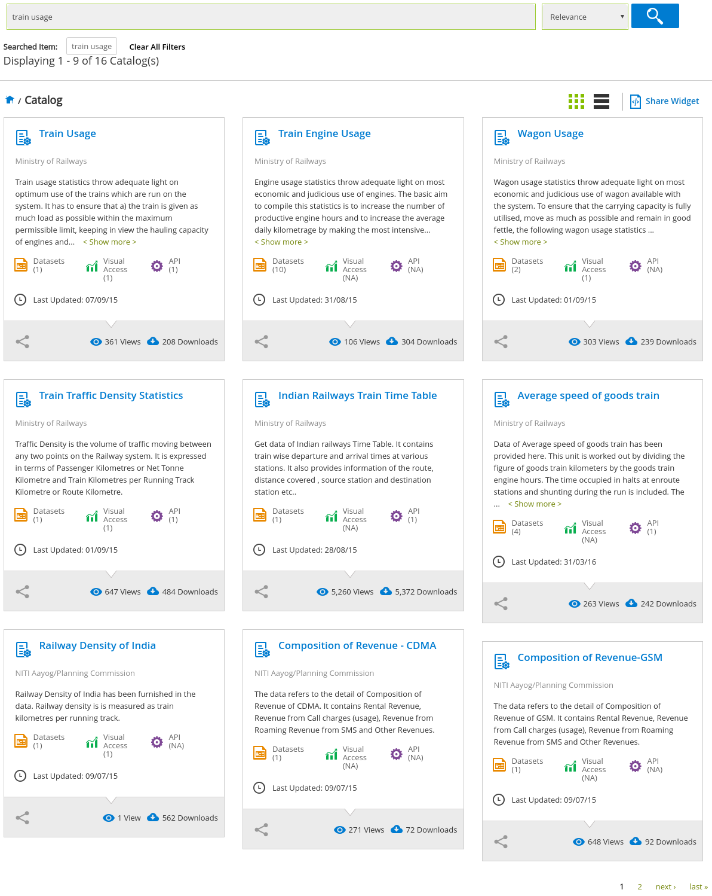

Search functionality
Sainath Adapa
2016-09-02
Source:vignettes/search-functionality.Rmd
search-functionality.RmdIntroduction
A typical search for datasets in the Open Government Data Platform - India may proceed as follows. The person has a topic in mind, he enters the keywords for that topic in the search field, and clicks search. This will result in a list of catalogs related to the topic searched. The user then proceeds to click a few catalogs, and looks for the relavant datasets. Once he finds a dataset, he then will download the dataset, imports it into R, and starts the analysis.
The search functionality in this package is intended to help users by
enabling the user to search for datasets directly from R. Once a
particular dataset has been identified, the user can download the
dataset using the fetch_data function if the dataset has
API access. If the dataset doesn’t have API access, then the user can
choose among the numerous utilies that are available in the R ecosystem
to download and import data.
Web flow
As data.gov.in doesn’t have an API endpoint to search for datasets (yet), this package uses web scraping to achieve this result. There are a number of pages and steps that a user goes through before he reaches the dataset page. It is important to know this process, to understand the various parameters of the search functionality.
Step 1 : Catalog results
This is the result page for the search term “train usage”.

As can be seen from the image, the results page contains a grid of boxes. Each box represents a catalog (or a set) of datasets. Datasets from a particular catalog generally have a common theme. Also, notice the right hand bottom corner of the page, which shows that there are more catalogs in the next page.
So, TLDR there can be multiple search pages, and each search page contains many catalogs.
search_for_datasets
search_for_datasets function takes a search term(s),
parses through the search pages and then catalogs, to return a
data.frame with information about the datasets.
search_for_datasets('train usage')## 'data.frame': 11 obs. of 11 variables:
## $ name : chr "Average Load Of Goods Trains (All Tracation) Broad Gauge and Metre Gauge upto 2013-14" "Average Number Of Locomotives In Use Daily (Diesel) Narrow Gauge upto 2013-14" "Average Number Of Locomotives In Use Daily (Electric) Metre Gauge upto 2013-14" "Engine Usage - Engine Kilometres Per Day Per Engine In Use Goods upto 2013-14" ...
## $ granularity: chr "Annual" "Annual" "Annual" "Annual" ...
## $ file_size : chr "2.08 KB" "1.27 KB" "1.32 KB" "2.25 KB" ...
## $ downloads : num 213 55 39 42 45 44 30 16 15 20 ...
## $ res_id : chr "a9970326-4b1a-4871-8612-5cc1a694216f" NA NA NA ...
## $ csv : chr "https://data.gov.in/resources/average-load-goods-trains-all-tracation-broad-gauge-and-metre-gauge-upto-2013-14/download" "https://data.gov.in/resources/average-number-locomotives-use-daily-diesel-narrow-gauge-upto-2013-14/download" "https://data.gov.in/resources/average-number-locomotives-use-daily-electric-metre-gauge-upto-2013-14/download" "https://data.gov.in/resources/engine-usage-engine-kilometres-day-engine-use-goods-upto-2013-14/download" ...
## $ ods : chr "https://data.gov.in/node/343761/datastore/export/ods" NA NA NA ...
## $ xls : chr "https://data.gov.in/node/343761/datastore/export/xls" NA NA NA ...
## $ json : chr "https://data.gov.in/node/343761/datastore/export/json" NA NA NA ...
## $ xml : chr "https://data.gov.in/node/343761/datastore/export/xml" NA NA NA ...
## $ jsonp : chr "https://data.gov.in/node/343761/datastore/export/jsonp" NA NA NA ...This function contains five parameters in addition to the search term. These are
limit_catalog_pageslimit_catalogslimit_dataset_pageslimit_datasetsreturn_catalog_list
The first two parameters refer to the Step 1, as explained in the
previous section. limit_catalog_pages limits the number of
pages that the function will go through to get the list of catalogs.
limit_catalogs limits the total number of catalogs parsed.
These two knobs can be used independently or in combination with each
other. For example, set limit_catalog_pages to
Inf, and limit_catalogs to 25, to get 25
catalogs irrespective of the number of pages it takes to get that many
catalogs.
The next two parameters refer to the Step 2.
limit_dataset_pages limits the number of pages of datasets
that the function will parse for a particular catalog. The function will
stop irrespective of the remaining catalogs and pages of datasets, once
the limit_datasets value has been reached.
search_for_datasets(search_terms = c('state', 'gdp'),
limit_catalog_pages = 1,
limit_catalogs = 3,
limit_dataset_pages = 2)## 'data.frame': 12 obs. of 11 variables:
## $ name : chr "Districtwise GDP and growth rate based at current price (1999-00) from 1999-00 to 2005-06 - Karnataka" "Districtwise GDP and growth rate based at current price (1999-00) from 1999-00 to 2007-08 - Maharashtra" "Districtwise GDP and growth rate based at current price (1999-00) from 1999-00 to 2007-08 - Meghalaya" "Districtwise GDP and growth rate based at current price (1999-00) from 1999-00 to 2007-08 - Madhya Pradesh" ...
## $ granularity: chr "Annual" "Annual" "Annual" "Annual" ...
## $ file_size : chr "3.98 KB" "6.26 KB" "1.67 KB" "8.11 KB" ...
## $ downloads : num 152 115 103 106 98 97 87 83 81 87 ...
## $ res_id : chr NA NA NA NA ...
## $ csv : chr "https://data.gov.in/resources/districtwise-gdp-and-growth-rate-based-current-price-1999-00-1999-00-2005-06-karnataka/download" "https://data.gov.in/resources/districtwise-gdp-and-growth-rate-based-current-price-1999-00-1999-00-2007-08-maharashtra/download"| __truncated__ "https://data.gov.in/resources/districtwise-gdp-and-growth-rate-based-current-price-1999-00-1999-00-2007-08-meghalaya/download" "https://data.gov.in/resources/districtwise-gdp-and-growth-rate-based-current-price-1999-00-1999-00-2007-08-madhya/download" ...
## $ ods : chr "https://data.gov.in/node/164395/datastore/export/ods" "https://data.gov.in/node/164404/datastore/export/ods" "https://data.gov.in/node/164410/datastore/export/ods" "https://data.gov.in/node/164416/datastore/export/ods" ...
## $ xls : chr "https://data.gov.in/node/164395/datastore/export/xls" "https://data.gov.in/node/164404/datastore/export/xls" "https://data.gov.in/node/164410/datastore/export/xls" "https://data.gov.in/node/164416/datastore/export/xls" ...
## $ json : chr "https://data.gov.in/node/164395/datastore/export/json" "https://data.gov.in/node/164404/datastore/export/json" "https://data.gov.in/node/164410/datastore/export/json" "https://data.gov.in/node/164416/datastore/export/json" ...
## $ xml : chr "https://data.gov.in/node/164395/datastore/export/xml" "https://data.gov.in/node/164404/datastore/export/xml" "https://data.gov.in/node/164410/datastore/export/xml" "https://data.gov.in/node/164416/datastore/export/xml" ...
## $ jsonp : chr "https://data.gov.in/node/164395/datastore/export/jsonp" "https://data.gov.in/node/164404/datastore/export/jsonp" "https://data.gov.in/node/164410/datastore/export/jsonp" "https://data.gov.in/node/164416/datastore/export/jsonp" ...The last parameter return_catalog_list will enable the
user to use this function to get only the list of catalogs. User can
then use his judgement to choose few catalogs and then run
get_datasets_from_a_catalog function on those catalogs to
obtain the datasets.
search_for_datasets(search_terms = c('state', 'gdp'),
limit_catalog_pages = 2,
return_catalog_list = TRUE)## 'data.frame': 18 obs. of 2 variables:
## $ name: chr "District Wise GDP and Growth Rate at Current Price(1999-2000)" "District Wise GDP and Growth Rate at Constant Price(1999-2000)" "District wise GDP and Growth Rate at Current Price(2004-05)" "District Wise GDP and Growth Rate at Constant Price(2004-05)" ...
## $ link: chr "https://data.gov.in/catalog/district-wise-gdp-and-growth-rate-current-price1999-2000" "https://data.gov.in/catalog/district-wise-gdp-and-growth-rate-constant-price1999-2000" "https://data.gov.in/catalog/district-wise-gdp-and-growth-rate-current-price2004-05" "https://data.gov.in/catalog/district-wise-gdp-and-growth-rate-constant-price2004-05" ...
get_datasets_from_a_catalog
Use this function to get the list of datasets from a particular catalog.
get_datasets_from_a_catalog(
'https://data.gov.in/catalog/session-wise-statistical-information-relating-questions-rajya-sabha',
limit_dataset_pages = 7, limit_datasets = 10)## 'data.frame': 12 obs. of 11 variables:
## $ name : chr "Notices of Starred and Unstarred Questions received for each date after the issue of Bulletin for commencement of the Session d"| __truncated__ "Statistical abstract relating to Questions (Starred and Unstarred) showing the number of notices received in respect of each Mi"| __truncated__ "Total number of notices of Starred and Unstarred Questions received under each Group during Rajya Sabha Session 220 (July to Au"| __truncated__ "Abstract showing disposal of notices of Starred and Unstarred Questions during Rajya Sabha Session 220 (July to August 2010)" ...
## $ granularity: chr "Others" "Others" "Others" "Others" ...
## $ file_size : chr "1.07 KB" "4.85 KB" "1.27 KB" "238 bytes" ...
## $ downloads : num 6 2 2 3 2 2 0 1 1 1 ...
## $ res_id : chr NA NA NA NA ...
## $ csv : chr "https://data.gov.in/resources/notices-starred-and-unstarred-questions-received-each-date-after-issue-bulletin-3/download" "https://data.gov.in/resources/statistical-abstract-relating-questions-starred-and-unstarred-showing-number-notices-4/download" "https://data.gov.in/resources/total-number-notices-starred-and-unstarred-questions-received-under-each-group-during-5/download" "https://data.gov.in/resources/abstract-showing-disposal-notices-starred-and-unstarred-questions-during-rajya-sabha-5/download" ...
## $ ods : chr NA NA NA NA ...
## $ xls : chr NA NA NA NA ...
## $ json : chr NA NA NA NA ...
## $ xml : chr NA NA NA NA ...
## $ jsonp : chr NA NA NA NA ...